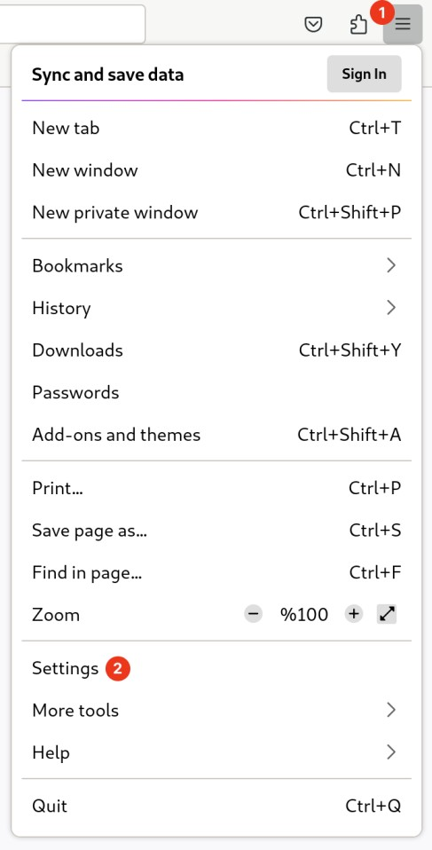
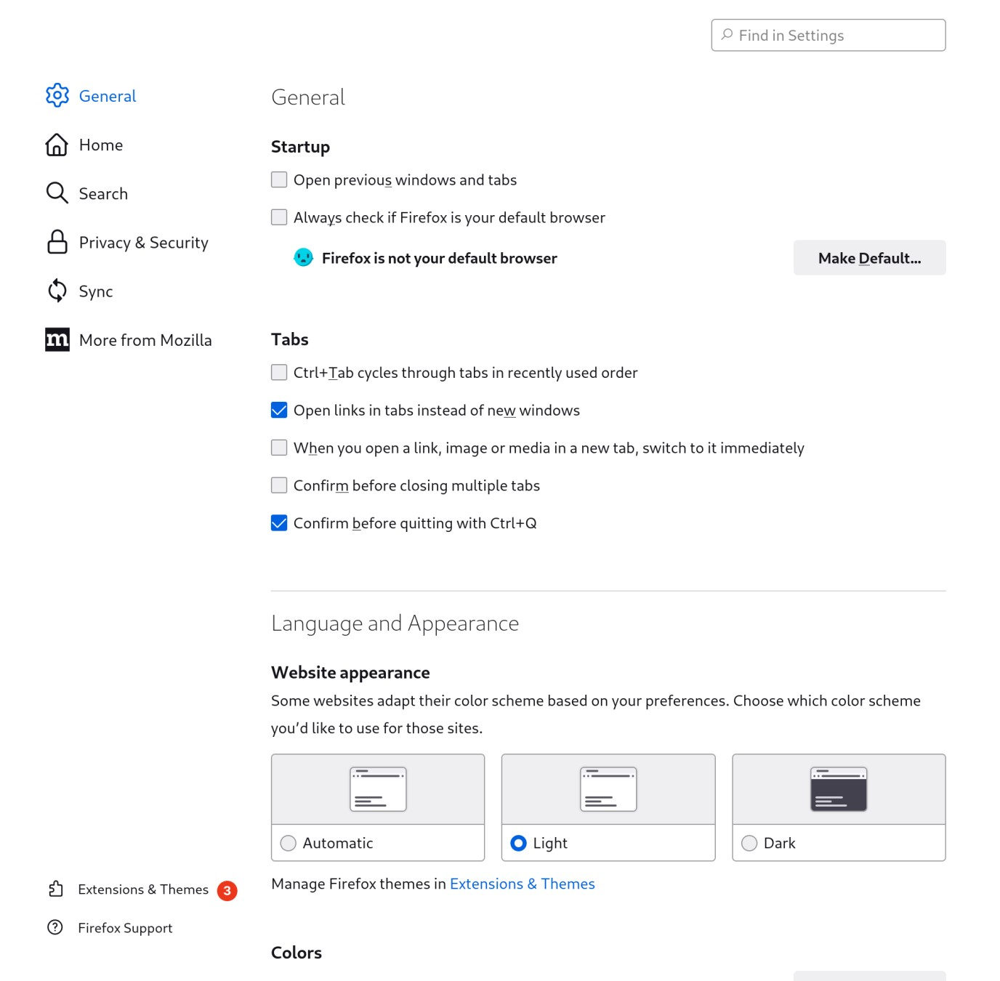
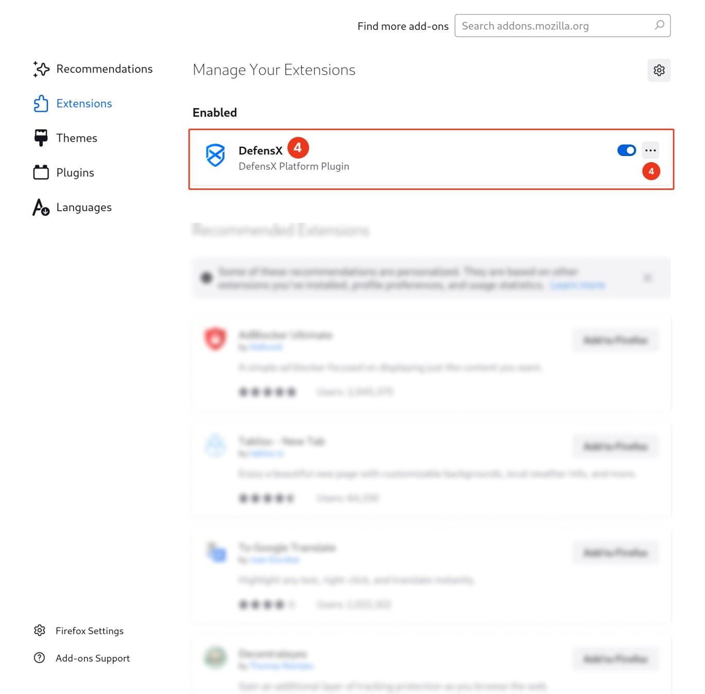
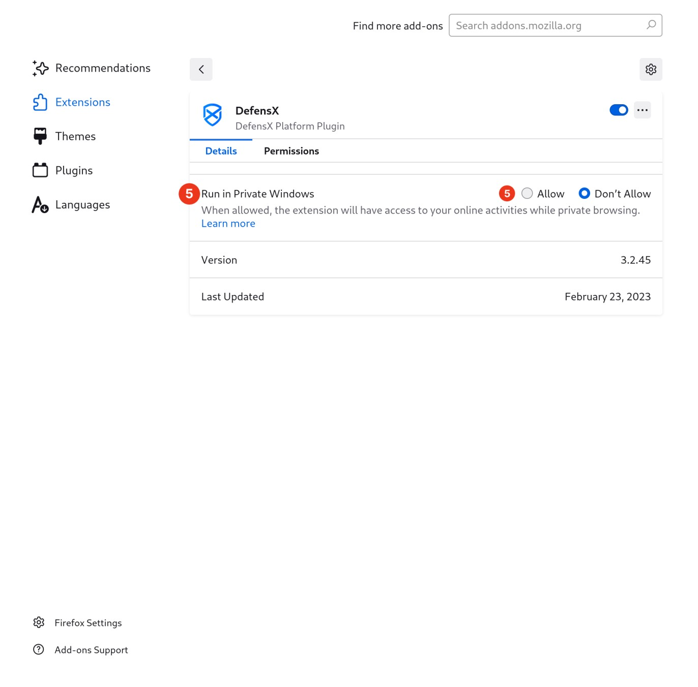

1
Open Firefox, and click the
“
”
menu bar at the top of any window or tab.
2
Click
Settings
.

3
At the bottom right click
Extensions & Themes
.

4
Under
Manage Your Extensions
section, select the
DefensX Extension
or click the
Manage
in the “…” menu beside the extension’s name.

5
Next to
Run in Private Windows
select
Allow
.
